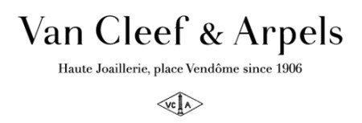
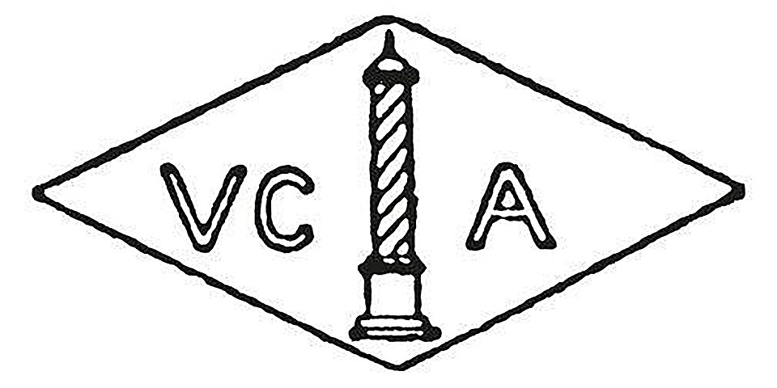

홈 > 브랜드 매거진 > 반클리프 아펠
반클리프 아펠
반클리프 아펠(Van Cleef & Arpels)은 1906년 파리 방돔 광장에서 설립된 프랑스 하이 주얼리 메종이다.
산업 분야 패션·럭셔리 · 공개 등급 자료 기반 · 브랜드 평가 4.3 ★


한눈에 보는 브랜드
반클리프 아펠은 1906년 보석상 가문 출신 알프레드 반클리프가 처남인 샬로몽(샤를) 아펠과 손잡고 파리 방돔광장 22번지에 문을 연 프랑스 하이주얼리 메종이다. 1908년과 1912년 쥘리앵 아펠과 루이 아펠이 합류하며 가족 경영 체제를 갖췄다.
행운을 뜻하는 네잎클로버를 형상화한 알함브라 모티프로 널리 알려져 있으며, 1999년 스위스 리치몬트 그룹에 편입돼 현재 까르띠에와 함께 그룹 주얼리 부문의 두 축을 이룬다.
브랜드 관점
경쟁의 핵심은 까르띠에, 티파니와의 미감 차별화다. 까르띠에가 기하학적이고 건축적인 선을, 티파니가 절제된 미니멀을 추구한다면 반클리프 아펠은 네잎클로버, 나비, 꽃, 요정 같은 자연과 시(詩)적 모티프로 여성적이고 낭만적인 결을 강조한다.
1933년 특허받은 미스터리 세팅(세르티 미스테리외)은 금속 발이 보이지 않게 보석을 고정하는 기법으로 메종의 기술적 정체성을 대표한다. 모회사 리치몬트에서 주얼리 부문은 그룹 매출의 약 4분의 3을 차지하는 핵심으로, 반클리프 아펠은 까르띠에와 함께 그 성장을 견인한다.
한국에서는 진입 가격대의 알함브라가 2030 여성층에게 인기를 끌며 신세계를 비롯한 백화점을 중심으로 매장이 확대되는 추세다.
시작과 성장
기원은 1895년 알프레드 반클리프와 에스텔 아펠의 결혼으로 거슬러 올라간다. 두 보석상 가문이 결합해 1906년 2월 파리 방돔광장 22번지에 첫 부티크를 열었고, 메종은 그 주소를 지금까지 떠나지 않았다.
1908년 쥘리앵 아펠, 1912년 루이 아펠이 차례로 합류하며 가족 경영을 확립했다. 1933년에는 금속 발 없이 보석을 촘촘히 잇는 미스터리 세팅을 특허로 확보해 세공 기술의 전기를 마련했다.
1968년에는 스페인 알함브라 궁전의 콰트로포일에서 영감받은 네잎클로버 형태의 알함브라 롱 네크리스를 선보여 즉각적인 성공을 거뒀다. 1999년 리치몬트가 5월 60퍼센트 지분을 인수한 뒤 보유 지분을 80퍼센트로 늘리며 그룹에 편입했다.
브랜드 아이덴티티
정체성의 뿌리는 창업 부부의 사랑 이야기에서 비롯된 가족, 혁신, 보석을 향한 열정이라는 가치다. 행운의 상징인 네잎클로버, 나비, 요정, 사계와 자연을 시적으로 풀어낸 모티프가 메종의 시각 언어를 이룬다.
2001년에는 셰익스피어의 한여름 밤의 꿈에서 영감을 받아 환상적이고 동화적인 분위기를 더했다. 목소리는 과시적 광고보다 마법, 시, 낭만의 정서로 고객과 교감하는 절제된 톤이며, 일상에서 겹쳐 연출하며 시간과 함께 자기만의 조합을 쌓아가려는 여성을 주된 대상으로 삼는다.
제품과 서비스
대표 라인은 네잎클로버를 형상화한 알함브라 컬렉션으로, 목걸이, 팔찌, 귀걸이, 반지가 자개, 카닐리언, 오닉스 등과 조합된다. 하트형 꽃잎의 프리볼레 등 자연 모티프 라인도 함께 전개한다.
한국 매장가는 스위트 목걸이 264만원, 빈티지 477만원, 매직 950만원 선이며, 직영 부티크와 신세계를 비롯한 백화점 매장을 주요 채널로 운영한다.
현재 상태
반클리프 아펠은 스위스 리치몬트 그룹의 자회사로, 본사는 창업 이래 파리 방돔광장에 있다. 메종 단독 매출과 영업이익은 별도로 공개되지 않으며 리치몬트의 주얼리 부문에 합산돼 보고된다.
2025년 3월 마감 회계연도 기준 그룹 주얼리 매출은 약 153억 유로로 전년 대비 8퍼센트 늘었고, 그룹 총매출 약 214억 유로에서 큰 비중을 차지했다. 최근에는 플라워레이스 신규 라인을 선보였고, 한국에서는 매장 확대와 가격 인상이 이어지고 있다.
타임라인
BI/CI 변천사
함께 읽을 브랜드
패션·럭셔리 · 편집 검수까르띠에 패션·럭셔리 · 매거진 완성티파니
패션·럭셔리 · 매거진 완성티파니 패션·럭셔리 · 매거진 완성프라다
패션·럭셔리 · 매거진 완성프라다 패션·럭셔리 · 편집 검수롤렉스
패션·럭셔리 · 편집 검수롤렉스 패션·럭셔리 · 편집 검수오메가
패션·럭셔리 · 편집 검수오메가 패션·럭셔리 · 매거진 완성스와치
패션·럭셔리 · 매거진 완성스와치 패션·럭셔리 · 매거진 완성코치
패션·럭셔리 · 매거진 완성코치 패션·럭셔리 · 편집 검수디젤
패션·럭셔리 · 편집 검수디젤
까르띠에(Cartier)는 1847년 파리에서 설립된 프랑스 럭셔리 주얼리·시계 메종이다.
패션·럭셔리 · 매거진 완성티파니티파니는 주얼리 자체만큼이나 색과 포장, 선물의 의식을 브랜드 자산으로 만든다. 블루 박스와 매장 경험은 제품을 구매하는 순간을 특별한 사건으로 바꾸며, 브랜드의 상...
패션·럭셔리 · 매거진 완성프라다프라다는 아름다움을 익숙한 화려함보다 지적인 긴장감으로 표현하는 브랜드다. 소재와 형태, 절제된 색감은 패션을 단순한 장식이 아니라 관찰과 해석의 대상으로 만든다.
패션·럭셔리 · 편집 검수롤렉스롤렉스(Rolex)는 스위스 제네바에 본사를 둔 럭셔리 시계 제조사이다.
오메가(OMEGA)는 스위스 스와치 그룹 산하의 럭셔리 시계 제조 브랜드이다.
패션·럭셔리 · 매거진 완성스와치스와치는 시계를 고가의 정밀기기에서 매일 바꿔 착용할 수 있는 패션 언어로 전환했다. 시간을 알려주는 기능보다 색, 그래픽, 컬렉션, 가벼운 가격대가 브랜드 경험의...
패션·럭셔리 · 매거진 완성코치코치는 실용적 가죽 제품을 일상적 럭셔리의 영역으로 끌어올린 브랜드다. 과시적 명품보다 접근 가능한 품질과 라이프스타일 이미지를 통해 오래 쓰는 가방의 감각을 브랜드...
패션·럭셔리 · 편집 검수디젤디젤(Diesel)은 1978년 렌조 로소가 이탈리아 브레간체에서 설립한 데님 중심의 컨템포러리 패션 브랜드다. 도발적이고 실험적인 디자인으로 데님 헤리티지를 재해석...